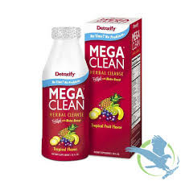

Detox / Cleanses
DETOXIFY MEGA CLEAN
- You can enjoy a healthier, cleaner body with Detoxify Mega Clean. Mega Clean is the herbal cleansing detox drink used by millions of satisfied people just like you. They cleansed their systems of toxins and impurities with Mega Clean, and so can you.
- Detoxify Mega Clean is the way to help lower the impurities your body absorbs every day.
PRODUCT INFO
- Pick your day for using your Mega Clean detox drink for intensive cleansing.
- Begin your cleansing program with Mega Clean.
- Shake the Mega Clean well and drink entire contents of the bottle.
- Mega Clean begins to immediately work to help support your body’s natural cleansing process.
- Wait 15 minutes. Refill the Mega Clean bottle with water — shake and drink.
- Urinate frequently. Frequent urination indicates that you are experiencing optimal cleansing with Mega Clean.
- Continue to drink plenty of water throughout the day to extend your cleansing program for hours.
TO FURTHER ENHANCE MEGA CLEAN’S EFFECTIVENESS
- Extend your intensive cleansing program with Mega Clean by taking PreCleanse Herbal capsules for the 2 days prior to using Mega Clean.
- Take Detoxify Constant Cleanse herbal capsules every day throughout the year. Periodic intensive cleansing is most effective when coupled with an ongoing detoxification routine.
- Eat light meals including fruits, vegetables, and fiber during your cleansing program with Mega Clean.
- Exercise regularly, and drink at least 12 8oz glasses of water in the days prior to using Mega Clean.
DOES MEGA CLEAN WORK?
With its powerful ingredients, Detoxify Mega Clean is the detox drink that has been effective for millions of people who are committed to cleansing. Simply follow Mega Clean’s guidelines for intensive cleansing and the Mega Clean directions, and you will experience optimal cleansing.
DETOXIFY MEGA CLEAN INGREDIENTS
Each 20oz Mega Clean detox drink contains our proprietary herbal blend. Mega Clean also includes:
- Vitamin A
- Vitamin C
- Vitamin D
- Thiamin
- Riboflavin
- Niacin
- Vitamin B6
- Folate
- Vitamin B12
- Biotin
- Pantothenic Acid
- Calcium
- Magnesium
- Zinc
- Selenium
- Manganese
- Chromium
- Potassium
- Creatine Monohydrate
MEGA CLEAN’S EXCLUSIVE HERBAL FORMULA IS:
- Burdock Root — Acts as a diuretic in Mega Clean to help release toxins from the body, as well as having blood cleansing properties.
- Devil’s Claw — Used in Mega Clean as a homeopathic remedy for liver, kidney, and metabolic disorders.
- Dandelion — Herbalists use this potent herb to support healthy liver and gallbladder function.
- Milk Thistle — Included in Mega Clean to restore healthy liver function and minimize toxin damage.
- Hawthorne Berry — Used in Mega Clean, as it has been for centuries, to support the heart and cardiovascular system.
- Uva Ursi — In Mega Clean to promote kidney and urinary health.
- Mullein Leaf — Acts as a tonic in Mega Clean to support the respiratory system and lungs.
- Stevia — A powerful cleansing herb in Mega Clean used by herbalists since ancient times.
- Fruit Fiber — Effective in Mega Clean for binding toxins and helping to eliminate them through the digestive tract.
- Taurine — An important amino acid that supports metabolism and detoxification.
MORE INFORMATION ON YOUR MEGA CLEAN DETOX DRINK
Detoxify Mega Clean was developed to help your body’s natural detoxification process safely and effectively reduce harmful impurities. Used properly, Mega Clean’s proprietary blend of vitamins, minerals, herbs and fiber helps you achieve a cleaner, healthier lifestyle.
Pregnant or breastfeeding women should consult their physician before using Mega Clean detox drink.
Detoxify Mega Clean detox drink is a dietary supplement. Statements made about Mega Clean have not been evaluated by the Food and Drug Administration. This product is not intended to diagnose, treat, cure, or prevent any disease.
RETURN & REFUND POLICY
All Sales are FINAL !
SHIPPING INFO
I'm a shipping policy. I'm a great place to add more information about your shipping methods, packaging and cost. Providing straightforward information about your shipping policy is a great way to build trust and reassure your customers that they can buy from you with confidence.